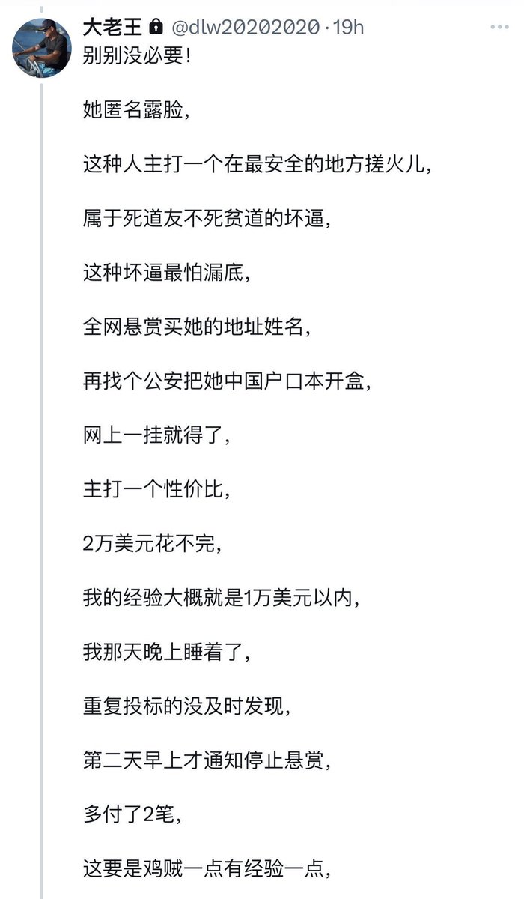
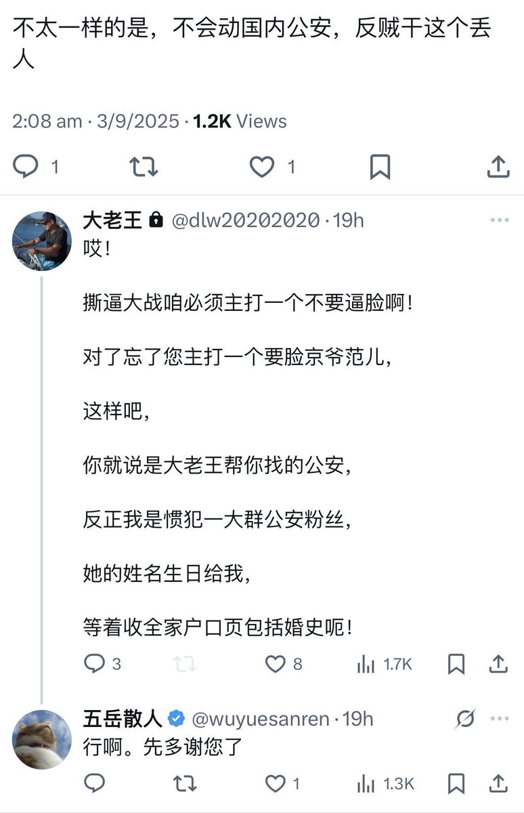
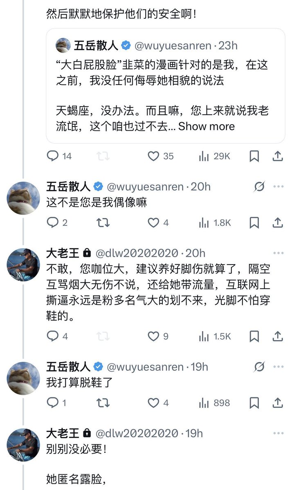
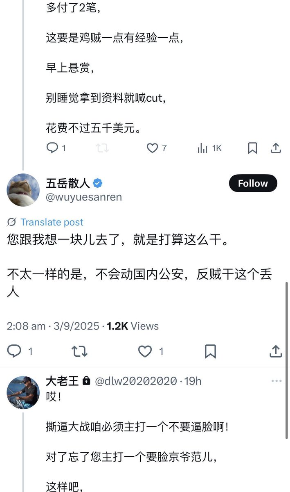

拱北靠北
@psyofsouthwest
RT @quaintlotus142: 过去的两个月里，我们亲眼看见了什么叫做“网络暴力产业链”。
五岳散人、王吉舟及其团伙，对异议者、女性和普通发声者实施了长期的，有组织的围攻、侮辱、性别羞辱、恐吓与跨国人肉开盒。…




逃跑的韭菜🇺🇸
@quaintlotus142
过去的两个月里，我们亲眼看见了什么叫做“网络暴力产业链”。
五岳散人、王吉舟及其团伙，对异议者、女性和普通发声者实施了长期的，有组织的围攻、侮辱、性别羞辱、恐吓与跨国人肉开盒。 https://t.co/0I5PKCsiKO